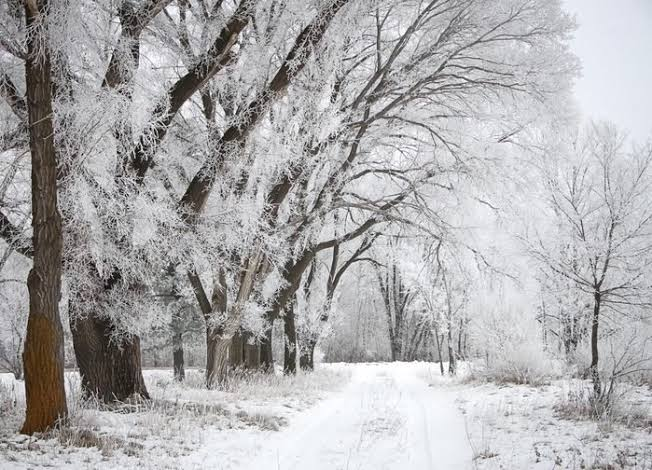

How's Our Awesome Tellus Today?
Earth, our home planet, is a world unlike any other. The third planet from the sun, Earth is the only place in the known universe confirmed to host life.
With a radius of 3,959 miles, Earth is the fifth largest planet in our solar system, and it's the only one known for sure to have liquid water on its surface.
Earth is also unique in terms of monikers. Every other solar system planet was named for a Greek or Roman deity, but for at least a thousand years,
some cultures have described our world using the Germanic word “earth,” which means simply “the ground.”
Four Season of Earth
Summer
In the summer, temperatures may increase to the hottest of the year. If they spike too high, heat waves or droughts may cause trouble for people, animals, and plants. For example, in the summer of 2003, the high temperatures claimed more than 30,000 lives, according to Encyclopedia Britannica. Rainfall may increase in some areas, as well. Others may receive less water, and forest fires may become more frequent.
Spring
In the spring, seeds take root and vegetation begins to grow. The weather is warmer and often wetter. Animals wake or return from warmer climates, often with newborns. Melting snow from the previous season, along with increased rainfall, can cause flooding along waterways, according to the Federal Emergency Management Agency (FEMA).
Autumn
In the autumn, or fall, temperatures cool again. Plants may begin to grow dormant. Animals might prepare themselves for the upcoming cold weather, storing food or traveling to warmer regions.
Winter
Winter often brings a chill. Some areas may experience snow or ice, while others see only cold rain. Animals find ways to warm themselves and may have changed their appearance to adapt. "In a similar way to the Autumnal theme, Winter festivals celebrate the return of the light during a time of deepest physical darkness," said De Rossi. The Indian festival of Diwali, for example, which takes place between October and November, celebrates the triumph of righteousness, and light over darkness.
